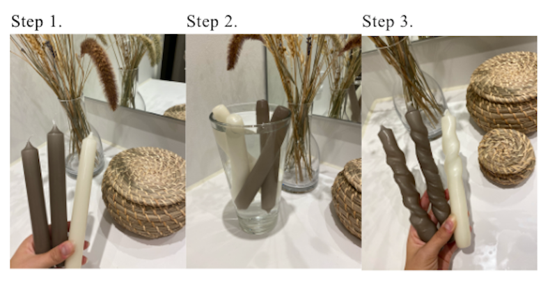

STEP 1
Hæld varmt vand fra hanen i vasen. Vandet skal være varmt, men du skal kunne stikke en finger i det uden at brænde dig. Test evt. med enden af et lys. Smelter det efter et par sekunder er vandet for varmt.
STEP 2
Kom dine lys i vandet og lad dem stå i 15 minutter. Sæt eventuelt en tallerken over åbningen, så varmen ikke slipper ud, og så dine lys holdes nede i vandet.
STEP 3
Efter de 15 minutter kan du nu modellere dine lys, der skal være bløde og bøjelige
STEP 4
Tag ét lys op ad gangen og form det, inden du tager det næste op.
Når dit lys har den ønskede form lægger du det i et fad med iskoldt vand, så det størkner.
